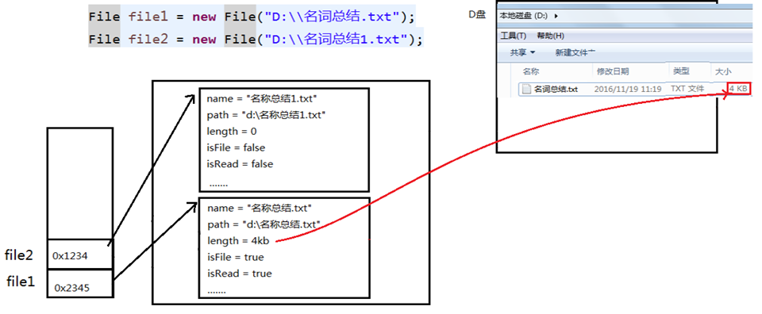
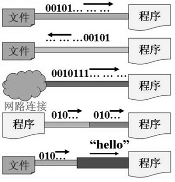
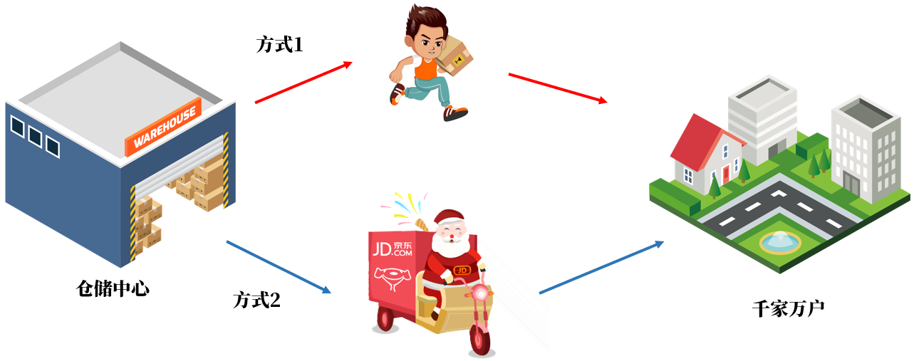
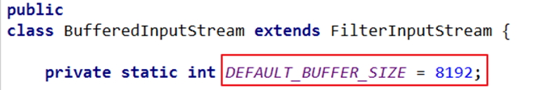

第15章_File类与IO流
本章专题与脉络

1. java.io.File类的使用
1.1 概述
- File类及本章下的各种流，都定义在java.io包下。
- 一个File对象代表硬盘或网络中可能存在的一个文件或者文件目录（俗称文件夹），与平台无关。（体会万事万物皆对象）
- File 能新建、删除、重命名文件和目录，但 File 不能访问文件内容本身。如果需要访问文件内容本身，则需要使用输入/输出流。
- File对象可以作为参数传递给流的构造器。
- 想要在Java程序中表示一个真实存在的文件或目录，那么必须有一个File对象，但是Java程序中的一个File对象，可能没有一个真实存在的文件或目录。
1.2 构造器
public File(String pathname)：以pathname为路径创建File对象，可以是绝对路径或者相对路径，如果pathname是相对路径，则默认的当前路径在系统属性user.dir中存储。public File(String parent, String child)：以parent为父路径，child为子路径创建File对象。public File(File parent, String child)：根据一个父File对象和子文件路径创建File对象
关于路径：
- 绝对路径：从盘符开始的路径，这是一个完整的路径。
- 相对路径：相对于
项目目录的路径，这是一个便捷的路径，开发中经常使用。- IDEA中，main中的文件的相对路径，是相对于”
当前工程“ - IDEA中，单元测试方法中的文件的相对路径，是相对于”
当前module“
- IDEA中，main中的文件的相对路径，是相对于”
举例：
package com.atguigu.file;
import java.io.File;
public class FileObjectTest {
public static void main(String[] args) {
// 文件路径名
String pathname = "D:\\aaa.txt";
File file1 = new File(pathname);
// 文件路径名
String pathname2 = "D:\\aaa\\bbb.txt";
File file2 = new File(pathname2);
// 通过父路径和子路径字符串
String parent = "d:\\aaa";
String child = "bbb.txt";
File file3 = new File(parent, child);
// 通过父级File对象和子路径字符串
File parentDir = new File("d:\\aaa");
String childFile = "bbb.txt";
File file4 = new File(parentDir, childFile);
}
@Test
public void test01() throws IOException{
File f1 = new File("d:\\atguigu\\javase\\HelloIO.java"); //绝对路径
System.out.println("文件/目录的名称：" + f1.getName());
System.out.println("文件/目录的构造路径名：" + f1.getPath());
System.out.println("文件/目录的绝对路径名：" + f1.getAbsolutePath());
System.out.println("文件/目录的父目录名：" + f1.getParent());
}
@Test
public void test02()throws IOException{
File f2 = new File("/HelloIO.java");//绝对路径，从根路径开始
System.out.println("文件/目录的名称：" + f2.getName());
System.out.println("文件/目录的构造路径名：" + f2.getPath());
System.out.println("文件/目录的绝对路径名：" + f2.getAbsolutePath());
System.out.println("文件/目录的父目录名：" + f2.getParent());
}
@Test
public void test03() throws IOException {
File f3 = new File("HelloIO.java");//相对路径
System.out.println("user.dir =" + System.getProperty("user.dir"));
System.out.println("文件/目录的名称：" + f3.getName());
System.out.println("文件/目录的构造路径名：" + f3.getPath());
System.out.println("文件/目录的绝对路径名：" + f3.getAbsolutePath());
System.out.println("文件/目录的父目录名：" + f3.getParent());
}
@Test
public void test04() throws IOException{
File f5 = new File("HelloIO.java");//相对路径
System.out.println("user.dir =" + System.getProperty("user.dir"));
System.out.println("文件/目录的名称：" + f5.getName());
System.out.println("文件/目录的构造路径名：" + f5.getPath());
System.out.println("文件/目录的绝对路径名：" + f5.getAbsolutePath());
System.out.println("文件/目录的父目录名：" + f5.getParent());
}
}注意：
无论该路径下是否存在文件或者目录，都不影响File对象的创建。
window的路径分隔符使用“\”，而Java程序中的“\”表示转义字符，所以在Windows中表示路径，需要用“\”。或者直接使用“/”也可以，Java程序支持将“/”当成平台无关的
路径分隔符。或者直接使用File.separator常量值表示。比如：File file2 = new File(“d:” + File.separator + “atguigu” + File.separator + “info.txt”);
当构造路径是绝对路径时，那么getPath和getAbsolutePath结果一样
当构造路径是相对路径时，那么getAbsolutePath的路径 = user.dir的路径 + 构造路径
1.3 常用方法
1、获取文件和目录基本信息
- public String getName() ：获取名称
- public String getPath() ：获取路径
public String getAbsolutePath()：获取绝对路径- public File getAbsoluteFile()：获取绝对路径表示的文件
public String getParent()：获取上层文件目录路径。若无，返回null- public long length() ：获取文件长度（即：字节数）。不能获取目录的长度。
- public long lastModified() ：获取最后一次的修改时间，毫秒值
如果File对象代表的文件或目录存在，则File对象实例初始化时，就会用硬盘中对应文件或目录的属性信息（例如，时间、类型等）为File对象的属性赋值，否则除了路径和名称，File对象的其他属性将会保留默认值。
举例：
package com.atguigu.file;
import java.io.File;
import java.time.Instant;
import java.time.LocalDateTime;
import java.time.ZoneId;
public class FileInfoMethod {
public static void main(String[] args) {
File f = new File("d:/aaa/bbb.txt");
System.out.println("文件构造路径:"+f.getPath());
System.out.println("文件名称:"+f.getName());
System.out.println("文件长度:"+f.length()+"字节");
System.out.println("文件最后修改时间：" + LocalDateTime.ofInstant(Instant.ofEpochMilli(f.lastModified()),ZoneId.of("Asia/Shanghai")));
File f2 = new File("d:/aaa");
System.out.println("目录构造路径:"+f2.getPath());
System.out.println("目录名称:"+f2.getName());
System.out.println("目录长度:"+f2.length()+"字节");
System.out.println("文件最后修改时间：" + LocalDateTime.ofInstant(Instant.ofEpochMilli(f.lastModified()),ZoneId.of("Asia/Shanghai")));
}
}输出结果：
文件构造路径:d:\aaa\bbb.java
文件名称:bbb.java
文件长度:636字节
文件最后修改时间：2022-07-23T22:01:32.065
目录构造路径:d:\aaa
目录名称:aaa
目录长度:4096字节
文件最后修改时间：2022-07-23T22:01:32.0652、列出目录的下一级
- public String[] list() ：返回一个String数组，表示该File目录中的所有子文件或目录。
- public File[] listFiles() ：返回一个File数组，表示该File目录中的所有的子文件或目录。
package com.atguigu.file;
import org.junit.Test;
import java.io.File;
import java.io.FileFilter;
import java.io.FilenameFilter;
public class DirListFiles {
@Test
public void test01() {
File dir = new File("d:/atguigu");
String[] subs = dir.list();
for (String sub : subs) {
System.out.println(sub);
}
}
}3、File类的重命名功能
- public boolean renameTo(File dest):把文件重命名为指定的文件路径。
public void test4() {
File file1 = new File("hello.txt");
File file2 = new File("d:\\io\\abc.txt");
boolean renameSuccess = file1.renameTo(file2);
System.out.println(renameSuccess ? "重命名成功" : "重命名失败");
// file1必须存在，且file2的abc.txt必须不存在，且file2所在的文件目录io需要存在。
// 最终结果：原位置的hello.txt不存在，在io下新增一个abc.txt文件，其中内容与hello.txt一致。
}4、判断功能的方法
public boolean exists()：此File表示的文件或目录是否实际存在。public boolean isDirectory()：此File表示的是否为目录。public boolean isFile()：此File表示的是否为文件。- public boolean canRead() ：判断是否可读
- public boolean canWrite() ：判断是否可写
- public boolean isHidden() ：判断是否隐藏
举例：
package com.atguigu.file;
import java.io.File;
public class FileIs {
public static void main(String[] args) {
File f = new File("d:\\aaa\\bbb.java");
File f2 = new File("d:\\aaa");
// 判断是否存在
System.out.println("d:\\aaa\\bbb.java 是否存在:"+f.exists());
System.out.println("d:\\aaa 是否存在:"+f2.exists());
// 判断是文件还是目录
System.out.println("d:\\aaa 文件?:"+f2.isFile());
System.out.println("d:\\aaa 目录?:"+f2.isDirectory());
}
}输出结果：
d:\aaa\bbb.java 是否存在:true
d:\aaa 是否存在:true
d:\aaa 文件?:false
d:\aaa 目录?:true如果文件或目录不存在，那么exists()、isFile()和isDirectory()都是返回true
5、创建、删除功能
public boolean createNewFile()：创建文件。若文件存在，则不创建，返回false。public boolean mkdir()：创建文件目录。如果此文件目录存在，就不创建了。如果此文件目录的上层目录不存在，也不创建。public boolean mkdirs()：创建文件目录。如果上层文件目录不存在，一并创建。public boolean delete()：删除文件或者文件夹
删除注意事项：① Java中的删除不走回收站。② 要删除一个文件目录，请注意该文件目录内不能包含文件或者文件目录。
举例：
package com.atguigu.file;
import java.io.File;
import java.io.IOException;
public class FileCreateDelete {
public static void main(String[] args) throws IOException {
// 文件的创建
File f = new File("aaa.txt");
System.out.println("aaa.txt是否存在:"+f.exists());
System.out.println("aaa.txt是否创建:"+f.createNewFile());
System.out.println("aaa.txt是否存在:"+f.exists());
// 目录的创建
File f2= new File("newDir");
System.out.println("newDir是否存在:"+f2.exists());
System.out.println("newDir是否创建:"+f2.mkdir());
System.out.println("newDir是否存在:"+f2.exists());
// 创建一级目录
File f3= new File("newDira\\newDirb");
System.out.println("newDira\\newDirb创建：" + f3.mkdir());
File f4= new File("newDir\\newDirb");
System.out.println("newDir\\newDirb创建：" + f4.mkdir());
// 创建多级目录
File f5= new File("newDira\\newDirb");
System.out.println("newDira\\newDirb创建：" + f5.mkdirs());
// 文件的删除
System.out.println("aaa.txt删除：" + f.delete());
// 目录的删除
System.out.println("newDir删除：" + f2.delete());
System.out.println("newDir\\newDirb删除：" + f4.delete());
}
}运行结果：
aaa.txt是否存在:false
aaa.txt是否创建:true
aaa.txt是否存在:true
newDir是否存在:false
newDir是否创建:true
newDir是否存在:true
newDira\newDirb创建：false
newDir\newDirb创建：true
newDira\newDirb创建：true
aaa.txt删除：true
newDir删除：false
newDir\newDirb删除：trueAPI中说明：delete方法，如果此File表示目录，则目录必须为空才能删除。
1.4 练习
练习1：利用File构造器，new 一个文件目录file
1) 在其中创建多个文件和目录
2) 编写方法，实现删除file中指定文件的操作
练习2：判断指定目录下是否有后缀名为.jpg的文件。如果有，就输出该文件名称
public class FindJPGFileTest {
//方法1：
@Test
public void test1(){
File srcFile = new File("d:\\code");
String[] fileNames = srcFile.list();
for(String fileName : fileNames){
if(fileName.endsWith(".jpg")){
System.out.println(fileName);
}
}
}
//方法2：
@Test
public void test2(){
File srcFile = new File("d:\\code");
File[] listFiles = srcFile.listFiles();
for(File file : listFiles){
if(file.getName().endsWith(".jpg")){
System.out.println(file.getAbsolutePath());
}
}
}
//方法3：
/*
* File类提供了两个文件过滤器方法
* public String[] list(FilenameFilter filter)
* public File[] listFiles(FileFilter filter)
*/
@Test
public void test3(){
File srcFile = new File("d:\\code");
File[] subFiles = srcFile.listFiles(new FilenameFilter() {
@Override
public boolean accept(File dir, String name) {
return name.endsWith(".jpg");
}
});
for(File file : subFiles){
System.out.println(file.getAbsolutePath());
}
}
}
练习3：遍历指定目录所有文件名称，包括子文件目录中的文件。
拓展1：并计算指定目录占用空间的大小
拓展2：删除指定文件目录及其下的所有文件
public class ListFilesTest {
//练习3：(方式1)
public static void printSubFile(File dir) {
// 打印目录的子文件
File[] subfiles = dir.listFiles();
for (File f : subfiles) {
if (f.isDirectory()) {// 文件目录
printSubFile(f);
} else {// 文件
System.out.println(f.getAbsolutePath());
}
}
}
// //练习3：(方式2)
public void listAllSubFiles(File file) {
if (file.isFile()) {
System.out.println(file);
} else {
File[] all = file.listFiles();
// 如果all[i]是文件，直接打印
// 如果all[i]是目录，接着再获取它的下一级
for (File f : all) {
listAllSubFiles(f);// 递归调用：自己调用自己就叫递归
}
}
}
@Test
public void testListAllFiles(){
// 1.创建目录对象
File dir = new File("E:\\teach\\01_javaSE\\_尚硅谷Java编程语言\\3_软件");
// 2.打印目录的子文件
printSubFile(dir);
}
// 拓展1：求指定目录所在空间的大小
public long getDirectorySize(File file) {
// file是文件，那么直接返回file.length()
// file是目录，把它的下一级的所有file大小加起来就是它的总大小
long size = 0;
if (file.isFile()) {
size = file.length();
} else {
File[] all = file.listFiles();// 获取file的下一级
// 累加all[i]的大小
for (File f : all) {
size += getDirectorySize(f);// f的大小;
}
}
return size;
}
// 拓展2：删除指定的目录
public void deleteDirectory(File file) {
// 如果file是文件，直接delete
// 如果file是目录，先把它的下一级干掉，然后删除自己
if (file.isDirectory()) {
File[] all = file.listFiles();
// 循环删除的是file的下一级
for (File f : all) {// f代表file的每一个下级
deleteDirectory(f);
}
}
// 删除自己
file.delete();
}
}2. IO流原理及流的分类
2.1 Java IO原理
Java程序中，对于数据的输入/输出操作以“
流(stream)” 的方式进行，可以看做是一种数据的流动。
I/O流中的I/O是
Input/Output的缩写， I/O技术是非常实用的技术，用于处理设备之间的数据传输。如读/写文件，网络通讯等。输入input：读取外部数据（磁盘、光盘等存储设备的数据）到程序（内存）中。输出output：将程序（内存）数据输出到磁盘、光盘等存储设备中。

2.2 流的分类
java.io包下提供了各种“流”类和接口，用以获取不同种类的数据，并通过标准的方法输入或输出数据。
按数据的流向不同分为：输入流和输出流。
- 输入流 ：把数据从
其他设备上读取到内存中的流。- 以InputStream、Reader结尾
- 输出流 ：把数据从
内存中写出到其他设备上的流。- 以OutputStream、Writer结尾
- 输入流 ：把数据从
按操作数据单位的不同分为：字节流（8bit）和字符流（16bit）。
- 字节流 ：以字节为单位，读写数据的流。
- 以InputStream、OutputStream结尾
- 字符流 ：以字符为单位，读写数据的流。
- 以Reader、Writer结尾
- 字节流 ：以字节为单位，读写数据的流。
根据IO流的角色不同分为：节点流和处理流。
节点流：直接从数据源或目的地读写数据
处理流：不直接连接到数据源或目的地，而是“连接”在已存在的流（节点流或处理流）之上，通过对数据的处理为程序提供更为强大的读写功能。

小结：图解

2.3 流的API
- Java的IO流共涉及40多个类，实际上非常规则，都是从如下4个抽象基类派生的。
| （抽象基类） | 输入流 | 输出流 |
|---|---|---|
| 字节流 | InputStream | OutputStream |
| 字符流 | Reader | Writer |
- 由这四个类派生出来的子类名称都是以其父类名作为子类名后缀。

常用的节点流：
- 文件流： FileInputStream、FileOutputStrean、FileReader、FileWriter
- 字节/字符数组流： ByteArrayInputStream、ByteArrayOutputStream、CharArrayReader、CharArrayWriter
- 对数组进行处理的节点流（对应的不再是文件，而是内存中的一个数组）。
常用处理流：
- 缓冲流：BufferedInputStream、BufferedOutputStream、BufferedReader、BufferedWriter
- 作用：增加缓冲功能，避免频繁读写硬盘，进而提升读写效率。
- 转换流：InputStreamReader、OutputStreamReader
- 作用：实现字节流和字符流之间的转换。
- 对象流：ObjectInputStream、ObjectOutputStream
- 作用：提供直接读写Java对象功能
3. 节点流之一：FileReader\FileWriter
3.1 Reader与Writer
Java提供一些字符流类，以字符为单位读写数据，专门用于处理文本文件。不能操作图片，视频等非文本文件。
常见的文本文件有如下的格式：.txt、.java、.c、.cpp、.py等
注意：.doc、.xls、.ppt这些都不是文本文件。
3.1.1 字符输入流：Reader
java.io.Reader抽象类是表示用于读取字符流的所有类的父类，可以读取字符信息到内存中。它定义了字符输入流的基本共性功能方法。
public int read()： 从输入流读取一个字符。 虽然读取了一个字符，但是会自动提升为int类型。返回该字符的Unicode编码值。如果已经到达流末尾了，则返回-1。public int read(char[] cbuf)： 从输入流中读取一些字符，并将它们存储到字符数组 cbuf中 。每次最多读取cbuf.length个字符。返回实际读取的字符个数。如果已经到达流末尾，没有数据可读，则返回-1。public int read(char[] cbuf,int off,int len)：从输入流中读取一些字符，并将它们存储到字符数组 cbuf中，从cbuf[off]开始的位置存储。每次最多读取len个字符。返回实际读取的字符个数。如果已经到达流末尾，没有数据可读，则返回-1。public void close()：关闭此流并释放与此流相关联的任何系统资源。
注意：当完成流的操作时，必须调用close()方法，释放系统资源，否则会造成内存泄漏。
3.1.2 字符输出流：Writer
java.io.Writer 抽象类是表示用于写出字符流的所有类的超类，将指定的字符信息写出到目的地。它定义了字节输出流的基本共性功能方法。
public void write(int c)：写出单个字符。public void write(char[] cbuf)：写出字符数组。public void write(char[] cbuf, int off, int len)：写出字符数组的某一部分。off：数组的开始索引；len：写出的字符个数。public void write(String str)：写出字符串。public void write(String str, int off, int len)：写出字符串的某一部分。off：字符串的开始索引；len：写出的字符个数。public void flush()：刷新该流的缓冲。public void close()：关闭此流。
注意：当完成流的操作时，必须调用close()方法，释放系统资源，否则会造成内存泄漏。
3.2 FileReader 与 FileWriter
3.2.1 FileReader
java.io.FileReader 类用于读取字符文件，构造时使用系统默认的字符编码和默认字节缓冲区。
FileReader(File file)： 创建一个新的 FileReader ，给定要读取的File对象。FileReader(String fileName)： 创建一个新的 FileReader ，给定要读取的文件的名称。
举例：读取hello.txt文件中的字符数据，并显示在控制台上
/**
* @author 尚硅谷-宋红康
* @create 14:09
*/
public class FileReaderWriterTest {
//实现方式1
@Test
public void test1() throws IOException {
//1. 创建File类的对象，对应着物理磁盘上的某个文件
File file = new File("hello.txt");
//2. 创建FileReader流对象，将File类的对象作为参数传递到FileReader的构造器中
FileReader fr = new FileReader(file);
//3. 通过相关流的方法，读取文件中的数据
// int data = fr.read(); //每调用一次读取一个字符
// while (data != -1) {
// System.out.print((char) data);
// data = fr.read();
// }
int data;
while ((data = fr.read()) != -1) {
System.out.print((char) data);
}
//4. 关闭相关的流资源，避免出现内存泄漏
fr.close();
}
//实现方式2：在方式1的基础上改进，使用try-catch-finally处理异常。保证流是可以关闭的
@Test
public void test2() {
FileReader fr = null;
try {
//1. 创建File类的对象，对应着物理磁盘上的某个文件
File file = new File("hello.txt");
//2. 创建FileReader流对象，将File类的对象作为参数传递到FileReader的构造器中
fr = new FileReader(file);
//3. 通过相关流的方法，读取文件中的数据
/*
* read():每次从对接的文件中读取一个字符。并将此字符返回。
* 如果返回值为-1,则表示文件到了末尾，可以不再读取。
* */
// int data = fr.read();
// while(data != -1){
// System.out.print((char)data);
// data = fr.read();
// }
int data;
while ((data = fr.read()) != -1) {
System.out.println((char) data);
}
} catch (IOException e) {
e.printStackTrace();
} finally {
//4. 关闭相关的流资源，避免出现内存泄漏
try {
if (fr != null)
fr.close();
} catch (IOException e) {
e.printStackTrace();
}
}
}
//实现方式3：调用read(char[] cbuf),每次从文件中读取多个字符
@Test
public void test3() {
FileReader fr = null;
try {
//1. 创建File类的对象，对应着物理磁盘上的某个文件
File file = new File("hello.txt");
//2. 创建FileReader流对象，将File类的对象作为参数传递到FileReader的构造器中
fr = new FileReader(file);
//3. 通过相关流的方法，读取文件中的数据
char[] cbuf = new char[5];
/*
* read(char[] cbuf) : 每次将文件中的数据读入到cbuf数组中，并返回读入到数组中的
* 字符的个数。
* */
int len; //记录每次读入的字符的个数
while ((len = fr.read(cbuf)) != -1) {
//处理char[]数组即可
//错误：
// for(int i = 0;i < cbuf.length;i++){
// System.out.print(cbuf[i]);
// }
//错误：
// String str = new String(cbuf);
// System.out.print(str);
//正确：
// for(int i = 0;i < len;i++){
// System.out.print(cbuf[i]);
// }
//正确：
String str = new String(cbuf, 0, len);
System.out.print(str);
}
} catch (IOException e) {
e.printStackTrace();
} finally {
//4. 关闭相关的流资源，避免出现内存泄漏
try {
if (fr != null)
fr.close();
} catch (IOException e) {
e.printStackTrace();
}
}
}
}不同实现方式的类比：

3.2.2 FileWriter
java.io.FileWriter 类用于写出字符到文件，构造时使用系统默认的字符编码和默认字节缓冲区。
FileWriter(File file)： 创建一个新的 FileWriter，给定要读取的File对象。FileWriter(String fileName)： 创建一个新的 FileWriter，给定要读取的文件的名称。FileWriter(File file,boolean append)： 创建一个新的 FileWriter，指明是否在现有文件末尾追加内容。
举例：
public class FWWrite {
//注意：应该使用try-catch-finally处理异常。这里出于方便阅读代码，使用了throws的方式
@Test
public void test01()throws IOException {
// 使用文件名称创建流对象
FileWriter fw = new FileWriter(new File("fw.txt"));
// 写出数据
fw.write(97); // 写出第1个字符
fw.write('b'); // 写出第2个字符
fw.write('C'); // 写出第3个字符
fw.write(30000); // 写出第4个字符，中文编码表中30000对应一个汉字。
//关闭资源
fw.close();
}
//注意：应该使用try-catch-finally处理异常。这里出于方便阅读代码，使用了throws的方式
@Test
public void test02()throws IOException {
// 使用文件名称创建流对象
FileWriter fw = new FileWriter(new File("fw.txt"));
// 字符串转换为字节数组
char[] chars = "尚硅谷".toCharArray();
// 写出字符数组
fw.write(chars); // 尚硅谷
// 写出从索引1开始，2个字符。
fw.write(chars,1,2); // 硅谷
// 关闭资源
fw.close();
}
//注意：应该使用try-catch-finally处理异常。这里出于方便阅读代码，使用了throws的方式
@Test
public void test03()throws IOException {
// 使用文件名称创建流对象
FileWriter fw = new FileWriter("fw.txt");
// 字符串
String msg = "尚硅谷";
// 写出字符数组
fw.write(msg); //尚硅谷
// 写出从索引1开始，2个字符。
fw.write(msg,1,2); // 硅谷
// 关闭资源
fw.close();
}
@Test
public void test04(){
FileWriter fw = null;
try {
//1. 创建File的对象
File file = new File("personinfo.txt");
//2. 创建FileWriter的对象，将File对象作为参数传递到FileWriter的构造器中
//如果输出的文件已存在，则会对现有的文件进行覆盖
fw = new FileWriter(file);
// fw = new FileWriter(file,false);
//如果输出的文件已存在，则会在现有的文件末尾写入数据
// fw = new FileWriter(file,true);
//3. 调用相关的方法，实现数据的写出操作
//write(String str) / write(char[] cbuf)
fw.write("I love you,");
fw.write("you love him.");
fw.write("so sad".toCharArray());
} catch (IOException e) {
e.printStackTrace();
} finally {
//4. 关闭资源，避免内存泄漏
try {
if (fw != null)
fw.close();
} catch (IOException e) {
throw new RuntimeException(e);
}
}
}
}3.2.3 小结
①
因为出现流资源的调用，为了避免内存泄漏，需要使用try-catch-finally处理异常
②
对于输入流来说，File类的对象必须在物理磁盘上存在，否则执行就会报FileNotFoundException。如果传入的是一个目录，则会报IOException异常。
对于输出流来说，File类的对象是可以不存在的。
> 如果File类的对象不存在，则可以在输出的过程中，自动创建File类的对象
> 如果File类的对象存在，
> 如果调用FileWriter(File file)或FileWriter(File file,false)，输出时会新建File文件覆盖已有的文件
> 如果调用FileWriter(File file,true)构造器，则在现有的文件末尾追加写出内容。3.3 关于flush（刷新）
因为内置缓冲区的原因，如果FileWriter不关闭输出流，无法写出字符到文件中。但是关闭的流对象，是无法继续写出数据的。如果我们既想写出数据，又想继续使用流，就需要flush() 方法了。
flush()：刷新缓冲区，流对象可以继续使用。close()：先刷新缓冲区，然后通知系统释放资源。流对象不可以再被使用了。
注意：即便是flush()方法写出了数据，操作的最后还是要调用close方法，释放系统资源。
举例：
public class FWWriteFlush {
//注意：应该使用try-catch-finally处理异常。这里出于方便阅读代码，使用了throws的方式
@Test
public void test() throws IOException {
// 使用文件名称创建流对象
FileWriter fw = new FileWriter("fw.txt");
// 写出数据，通过flush
fw.write('刷'); // 写出第1个字符
fw.flush();
fw.write('新'); // 继续写出第2个字符，写出成功
fw.flush();
// 写出数据，通过close
fw.write('关'); // 写出第1个字符
fw.close();
fw.write('闭'); // 继续写出第2个字符,【报错】java.io.IOException: Stream closed
fw.close();
}
}4. 节点流之二：FileInputStream\FileOutputStream
如果我们读取或写出的数据是非文本文件，则Reader、Writer就无能为力了，必须使用字节流。
4.1 InputStream和OutputStream
4.1.1 字节输入流：InputStream
java.io.InputStream 抽象类是表示字节输入流的所有类的超类，可以读取字节信息到内存中。它定义了字节输入流的基本共性功能方法。
public int read()： 从输入流读取一个字节。返回读取的字节值。虽然读取了一个字节，但是会自动提升为int类型。如果已经到达流末尾，没有数据可读，则返回-1。public int read(byte[] b)： 从输入流中读取一些字节数，并将它们存储到字节数组 b中 。每次最多读取b.length个字节。返回实际读取的字节个数。如果已经到达流末尾，没有数据可读，则返回-1。public int read(byte[] b,int off,int len)：从输入流中读取一些字节数，并将它们存储到字节数组 b中，从b[off]开始存储，每次最多读取len个字节 。返回实际读取的字节个数。如果已经到达流末尾，没有数据可读，则返回-1。public void close()：关闭此输入流并释放与此流相关联的任何系统资源。
说明：close()方法，当完成流的操作时，必须调用此方法，释放系统资源。
4.1.2 字节输出流：OutputStream
java.io.OutputStream 抽象类是表示字节输出流的所有类的超类，将指定的字节信息写出到目的地。它定义了字节输出流的基本共性功能方法。
public void write(int b)：将指定的字节输出流。虽然参数为int类型四个字节，但是只会保留一个字节的信息写出。public void write(byte[] b)：将 b.length字节从指定的字节数组写入此输出流。public void write(byte[] b, int off, int len)：从指定的字节数组写入 len字节，从偏移量 off开始输出到此输出流。public void flush()：刷新此输出流并强制任何缓冲的输出字节被写出。public void close()：关闭此输出流并释放与此流相关联的任何系统资源。
说明：close()方法，当完成流的操作时，必须调用此方法，释放系统资源。
4.2 FileInputStream 与 FileOutputStream
4.2.1 FileInputStream
java.io.FileInputStream 类是文件输入流，从文件中读取字节。
FileInputStream(File file)： 通过打开与实际文件的连接来创建一个 FileInputStream ，该文件由文件系统中的 File对象 file命名。FileInputStream(String name)： 通过打开与实际文件的连接来创建一个 FileInputStream ，该文件由文件系统中的路径名 name命名。
举例：
//read.txt文件中的内容如下：
abcde读取操作
public class FISRead {
//注意：应该使用try-catch-finally处理异常。这里出于方便阅读代码，使用了throws的方式
@Test
public void test() throws IOException {
// 使用文件名称创建流对象
FileInputStream fis = new FileInputStream("read.txt");
// 读取数据，返回一个字节
int read = fis.read();
System.out.println((char) read);
read = fis.read();
System.out.println((char) read);
read = fis.read();
System.out.println((char) read);
read = fis.read();
System.out.println((char) read);
read = fis.read();
System.out.println((char) read);
// 读取到末尾,返回-1
read = fis.read();
System.out.println(read);
// 关闭资源
fis.close();
/*
文件内容：abcde
输出结果：
a
b
c
d
e
-1
*/
}
@Test
public void test02()throws IOException{
// 使用文件名称创建流对象
FileInputStream fis = new FileInputStream("read.txt");
// 定义变量，保存数据
int b;
// 循环读取
while ((b = fis.read())!=-1) {
System.out.println((char)b);
}
// 关闭资源
fis.close();
}
@Test
public void test03()throws IOException{
// 使用文件名称创建流对象.
FileInputStream fis = new FileInputStream("read.txt"); // 文件中为abcde
// 定义变量，作为有效个数
int len;
// 定义字节数组，作为装字节数据的容器
byte[] b = new byte[2];
// 循环读取
while (( len= fis.read(b))!=-1) {
// 每次读取后,把数组变成字符串打印
System.out.println(new String(b));
}
// 关闭资源
fis.close();
/*
输出结果：
ab
cd
ed
最后错误数据`d`，是由于最后一次读取时，只读取一个字节`e`，数组中，
上次读取的数据没有被完全替换，所以要通过`len` ，获取有效的字节
*/
}
@Test
public void test04()throws IOException{
// 使用文件名称创建流对象.
FileInputStream fis = new FileInputStream("read.txt"); // 文件中为abcde
// 定义变量，作为有效个数
int len;
// 定义字节数组，作为装字节数据的容器
byte[] b = new byte[2];
// 循环读取
while (( len= fis.read(b))!=-1) {
// 每次读取后,把数组的有效字节部分，变成字符串打印
System.out.println(new String(b,0,len));// len 每次读取的有效字节个数
}
// 关闭资源
fis.close();
/*
输出结果：
ab
cd
e
*/
}
}4.2.2 FileOutputStream
java.io.FileOutputStream 类是文件输出流，用于将数据写出到文件。
public FileOutputStream(File file)：创建文件输出流，写出由指定的 File对象表示的文件。public FileOutputStream(String name)： 创建文件输出流，指定的名称为写出文件。public FileOutputStream(File file, boolean append)： 创建文件输出流，指明是否在现有文件末尾追加内容。
举例：
package com.atguigu.fileio;
import org.junit.Test;
import java.io.FileOutputStream;
import java.io.IOException;
public class FOSWrite {
//注意：应该使用try-catch-finally处理异常。这里出于方便阅读代码，使用了throws的方式
@Test
public void test01() throws IOException {
// 使用文件名称创建流对象
FileOutputStream fos = new FileOutputStream("fos.txt");
// 写出数据
fos.write(97); // 写出第1个字节
fos.write(98); // 写出第2个字节
fos.write(99); // 写出第3个字节
// 关闭资源
fos.close();
/* 输出结果：abc*/
}
@Test
public void test02()throws IOException {
// 使用文件名称创建流对象
FileOutputStream fos = new FileOutputStream("fos.txt");
// 字符串转换为字节数组
byte[] b = "abcde".getBytes();
// 写出从索引2开始，2个字节。索引2是c，两个字节，也就是cd。
fos.write(b,2,2);
// 关闭资源
fos.close();
}
//这段程序如果多运行几次，每次都会在原来文件末尾追加abcde
@Test
public void test03()throws IOException {
// 使用文件名称创建流对象
FileOutputStream fos = new FileOutputStream("fos.txt",true);
// 字符串转换为字节数组
byte[] b = "abcde".getBytes();
fos.write(b);
// 关闭资源
fos.close();
}
//使用FileInputStream\FileOutputStream，实现对文件的复制
@Test
public void test05() {
FileInputStream fis = null;
FileOutputStream fos = null;
try {
//1. 造文件-造流
//复制图片：成功
// fis = new FileInputStream(new File("pony.jpg"));
// fos = new FileOutputStream(new File("pony_copy1.jpg"));
//复制文本文件：成功
fis = new FileInputStream(new File("hello.txt"));
fos = new FileOutputStream(new File("hello1.txt"));
//2. 复制操作（读、写）
byte[] buffer = new byte[1024];
int len;//每次读入到buffer中字节的个数
while ((len = fis.read(buffer)) != -1) {
fos.write(buffer, 0, len);
// String str = new String(buffer,0,len);
// System.out.print(str);
}
System.out.println("复制成功");
} catch (IOException e) {
throw new RuntimeException(e);
} finally {
//3. 关闭资源
try {
if (fos != null)
fos.close();
} catch (IOException e) {
throw new RuntimeException(e);
}
try {
if (fis != null)
fis.close();
} catch (IOException e) {
throw new RuntimeException(e);
}
}
}
}4.3 练习
练习：实现图片加密操作。
提示：

/**
* @author 尚硅谷-宋红康
* @create 8:59
*/
public class FileSecretTest {
/*
* 图片的加密
* */
@Test
public void test1(){
FileInputStream fis = null;
FileOutputStream fos = null;
try {
File file1 = new File("pony.jpg");
File file2 = new File("pony_secret.jpg");
fis = new FileInputStream(file1);
fos = new FileOutputStream(file2);
//方式1：每次读入一个字节，效率低
// int data;
// while((data = fis.read()) != -1){
// fos.write(data ^ 5);
// }
//方式2：每次读入一个字节数组，效率高
int len;
byte[] buffer = new byte[1024];
while((len = fis.read(buffer)) != -1){
for(int i = 0;i < len;i++){
buffer[i] = (byte) (buffer[i] ^ 5);
}
fos.write(buffer,0,len);
}
System.out.println("加密成功");
} catch (IOException e) {
e.printStackTrace();
} finally {
try {
fos.close();
} catch (IOException e) {
e.printStackTrace();
}
try {
fis.close();
} catch (IOException e) {
e.printStackTrace();
}
}
}
/*
* 图片的解密
* */
@Test
public void test2(){
FileInputStream fis = null;
FileOutputStream fos = null;
try {
File file1 = new File("pony_secret.jpg");
File file2 = new File("pony_unsecret.jpg");
fis = new FileInputStream(file1);
fos = new FileOutputStream(file2);
//方式1：每次读入一个字节，效率低
// int data;
// while((data = fis.read()) != -1){
// fos.write(data ^ 5);
// }
//方式2：每次读入一个字节数组，效率高
int len;
byte[] buffer = new byte[1024];
while((len = fis.read(buffer)) != -1){
for(int i = 0;i < len;i++){
buffer[i] = (byte) (buffer[i] ^ 5);
}
fos.write(buffer,0,len);
}
System.out.println("解密成功");
} catch (IOException e) {
e.printStackTrace();
} finally {
try {
fos.close();
} catch (IOException e) {
e.printStackTrace();
}
try {
fis.close();
} catch (IOException e) {
e.printStackTrace();
}
}
}
}5. 处理流之一：缓冲流
为了提高数据读写的速度，Java API提供了带缓冲功能的流类：缓冲流。缓冲流要“套接”在相应的节点流之上，根据数据操作单位可以把缓冲流分为：
- 字节缓冲流：
BufferedInputStream，BufferedOutputStream - 字符缓冲流：
BufferedReader，BufferedWriter
- 字节缓冲流：
缓冲流的基本原理：在创建流对象时，内部会创建一个缓冲区数组（缺省使用
8192个字节(8Kb)的缓冲区），通过缓冲区读写，减少系统IO次数，从而提高读写的效率。


5.1 构造器
public BufferedInputStream(InputStream in)：创建一个 新的字节型的缓冲输入流。public BufferedOutputStream(OutputStream out)： 创建一个新的字节型的缓冲输出流。
代码举例：
// 创建字节缓冲输入流
BufferedInputStream bis = new BufferedInputStream(new FileInputStream("abc.jpg"));
// 创建字节缓冲输出流
BufferedOutputStream bos = new BufferedOutputStream(new FileOutputStream("abc_copy.jpg"));public BufferedReader(Reader in)：创建一个 新的字符型的缓冲输入流。public BufferedWriter(Writer out)： 创建一个新的字符型的缓冲输出流。
代码举例：
// 创建字符缓冲输入流
BufferedReader br = new BufferedReader(new FileReader("br.txt"));
// 创建字符缓冲输出流
BufferedWriter bw = new BufferedWriter(new FileWriter("bw.txt"));5.2 效率测试
查询API，缓冲流读写方法与基本的流是一致的，我们通过复制大文件（375MB），测试它的效率。
//方法1：使用FileInputStream\FileOutputStream实现非文本文件的复制
public void copyFileWithFileStream(String srcPath,String destPath){
FileInputStream fis = null;
FileOutputStream fos = null;
try {
//1. 造文件-造流
fis = new FileInputStream(new File(srcPath));
fos = new FileOutputStream(new File(destPath));
//2. 复制操作（读、写）
byte[] buffer = new byte[100];
int len;//每次读入到buffer中字节的个数
while ((len = fis.read(buffer)) != -1) {
fos.write(buffer, 0, len);
}
System.out.println("复制成功");
} catch (IOException e) {
throw new RuntimeException(e);
} finally {
//3. 关闭资源
try {
if (fos != null)
fos.close();
} catch (IOException e) {
throw new RuntimeException(e);
}
try {
if (fis != null)
fis.close();
} catch (IOException e) {
throw new RuntimeException(e);
}
}
}
@Test
public void test1(){
String srcPath = "C:\\Users\\shkstart\\Desktop\\01-复习.mp4";
String destPath = "C:\\Users\\shkstart\\Desktop\\01-复习2.mp4";
long start = System.currentTimeMillis();
copyFileWithFileStream(srcPath,destPath);
long end = System.currentTimeMillis();
System.out.println("花费的时间为：" + (end - start));//7677毫秒
}
//方法2：使用BufferedInputStream\BufferedOuputStream实现非文本文件的复制
public void copyFileWithBufferedStream(String srcPath,String destPath){
FileInputStream fis = null;
FileOutputStream fos = null;
BufferedInputStream bis = null;
BufferedOutputStream bos = null;
try {
//1. 造文件
File srcFile = new File(srcPath);
File destFile = new File(destPath);
//2. 造流
fis = new FileInputStream(srcFile);
fos = new FileOutputStream(destFile);
bis = new BufferedInputStream(fis);
bos = new BufferedOutputStream(fos);
//3. 读写操作
int len;
byte[] buffer = new byte[100];
while ((len = bis.read(buffer)) != -1) {
bos.write(buffer, 0, len);
}
System.out.println("复制成功");
} catch (IOException e) {
e.printStackTrace();
} finally {
//4. 关闭资源(如果有多个流，我们需要先关闭外面的流，再关闭内部的流)
try {
if (bos != null)
bos.close();
} catch (IOException e) {
throw new RuntimeException(e);
}
try {
if (bis != null)
bis.close();
} catch (IOException e) {
throw new RuntimeException(e);
}
}
}
@Test
public void test2(){
String srcPath = "C:\\Users\\shkstart\\Desktop\\01-复习.mp4";
String destPath = "C:\\Users\\shkstart\\Desktop\\01-复习2.mp4";
long start = System.currentTimeMillis();
copyFileWithBufferedStream(srcPath,destPath);
long end = System.currentTimeMillis();
System.out.println("花费的时间为：" + (end - start));//415毫秒
}5.3 字符缓冲流特有方法
字符缓冲流的基本方法与普通字符流调用方式一致，不再阐述，我们来看它们具备的特有方法。
- BufferedReader：
public String readLine(): 读一行文字。 返回的字符串不包含换行符。 - BufferedWriter：
public void newLine(): 写一行行分隔符,由系统属性定义符号。
public class BufferedIOLine {
@Test
public void testReadLine()throws IOException {
// 创建流对象
BufferedReader br = new BufferedReader(new FileReader("in.txt"));
// 定义字符串,保存读取的一行文字
String line;
// 循环读取,读取到最后返回null
while ((line = br.readLine())!=null) {
System.out.println(line);
}
// 释放资源
br.close();
}
@Test
public void testNewLine()throws IOException{
// 创建流对象
BufferedWriter bw = new BufferedWriter(new FileWriter("out.txt"));
// 写出数据
bw.write("尚");
// 写出换行
bw.newLine();
bw.write("硅");
bw.newLine();
bw.write("谷");
bw.newLine();
// 释放资源
bw.close();
}
}
说明：
涉及到嵌套的多个流时，如果都显式关闭的话，需要先关闭外层的流，再关闭内层的流
其实在开发中，只需要关闭最外层的流即可，因为在关闭外层流时，内层的流也会被关闭。
5.4 练习
练习1：分别使用节点流：FileInputStream、FileOutputStream和缓冲流：BufferedInputStream、BufferedOutputStream实现文本文件/图片/视频文件的复制。并比较二者在数据复制方面的效率。
练习2：
姓氏统计：一个文本文件中存储着北京所有高校在校生的姓名，格式如下：
每行一个名字，姓与名以空格分隔：
张 三
李 四
王 小五现在想统计所有的姓氏在文件中出现的次数，请描述一下你的解决方案。
public static void main(String[] args) {
HashMap<String, Integer> map = new HashMap<>();
BufferedReader br = null;
try {
br = new BufferedReader(new FileReader(new File("e:/name.txt")));
String value = null; // 临时接收文件中的字符串变量
StringBuffer buffer = new StringBuffer();
flag:
while ((value = br.readLine()) != null) { // 开始读取文件中的字符
char[] c = value.toCharArray();
for (int i = 0; i < c.length; i++) {
if (c[i] != ' ') {
buffer.append(String.valueOf(c[i]));
} else {
if (map.containsKey(buffer.toString())) {
int count = map.get(buffer.toString());
map.put(buffer.toString(), count + 1);
} else {
map.put(buffer.toString(), 1);
}
buffer.delete(0, buffer.length());
continue flag;
}
}
}
} catch (Exception e) {
e.printStackTrace();
} finally {
if (br != null) {
try {
br.close();
} catch (IOException e) {
e.printStackTrace();
}
}
}
Set<Map.Entry<String, Integer>> set = map.entrySet();
Iterator<Map.Entry<String, Integer>> it = set.iterator();
while (it.hasNext()) {
Map.Entry<String, Integer> end = (Map.Entry<String, Integer>) it.next();
System.out.println(end);
}
}6. 处理流之二：转换流
6.1 问题引入
引入情况1：
使用FileReader 读取项目中的文本文件。由于IDEA设置中针对项目设置了UTF-8编码，当读取Windows系统中创建的文本文件时，如果Windows系统默认的是GBK编码，则读入内存中会出现乱码。
package com.atguigu.transfer;
import java.io.FileReader;
import java.io.IOException;
public class Problem {
public static void main(String[] args) throws IOException {
FileReader fileReader = new FileReader("E:\\File_GBK.txt");
int data;
while ((data = fileReader.read()) != -1) {
System.out.print((char)data);
}
fileReader.close();
}
}
输出结果：
���那么如何读取GBK编码的文件呢？
引入情况2：
针对文本文件，现在使用一个字节流进行数据的读入，希望将数据显示在控制台上。此时针对包含中文的文本数据，可能会出现乱码。
6.2 转换流的理解
作用：转换流是字节与字符间的桥梁！

具体来说：

6.3 InputStreamReader 与 OutputStreamWriter
InputStreamReader
转换流
java.io.InputStreamReader，是Reader的子类，是从字节流到字符流的桥梁。它读取字节，并使用指定的字符集将其解码为字符。它的字符集可以由名称指定，也可以接受平台的默认字符集。构造器
InputStreamReader(InputStream in): 创建一个使用默认字符集的字符流。InputStreamReader(InputStream in, String charsetName): 创建一个指定字符集的字符流。
举例
//使用默认字符集 InputStreamReader isr1 = new InputStreamReader(new FileInputStream("in.txt")); //使用指定字符集 InputStreamReader isr2 = new InputStreamReader(new FileInputStream("in.txt") , "GBK");示例代码：
package com.atguigu.transfer; import java.io.FileInputStream; import java.io.IOException; import java.io.InputStreamReader; public class InputStreamReaderDemo { public static void main(String[] args) throws IOException { // 定义文件路径,文件为gbk编码 String fileName = "E:\\file_gbk.txt"; //方式1： // 创建流对象,默认UTF8编码 InputStreamReader isr1 = new InputStreamReader(new FileInputStream(fileName)); // 定义变量,保存字符 int charData; // 使用默认编码字符流读取,乱码 while ((charData = isr1.read()) != -1) { System.out.print((char)charData); // ��Һ� } isr1.close(); //方式2： // 创建流对象,指定GBK编码 InputStreamReader isr2 = new InputStreamReader(new FileInputStream(fileName) , "GBK"); // 使用指定编码字符流读取,正常解析 while ((charData = isr2.read()) != -1) { System.out.print((char)charData);// 大家好 } isr2.close(); } }
OutputStreamWriter
转换流
java.io.OutputStreamWriter，是Writer的子类，是从字符流到字节流的桥梁。使用指定的字符集将字符编码为字节。它的字符集可以由名称指定，也可以接受平台的默认字符集。构造器
OutputStreamWriter(OutputStream in): 创建一个使用默认字符集的字符流。OutputStreamWriter(OutputStream in,String charsetName): 创建一个指定字符集的字符流。
举例：
//使用默认字符集 OutputStreamWriter isr = new OutputStreamWriter(new FileOutputStream("out.txt")); //使用指定的字符集 OutputStreamWriter isr2 = new OutputStreamWriter(new FileOutputStream("out.txt") , "GBK");示例代码：
package com.atguigu.transfer; import java.io.FileOutputStream; import java.io.IOException; import java.io.OutputStreamWriter; public class OutputStreamWriterDemo { public static void main(String[] args) throws IOException { // 定义文件路径 String FileName = "E:\\out_utf8.txt"; // 创建流对象,默认UTF8编码 OutputStreamWriter osw = new OutputStreamWriter(new FileOutputStream(FileName)); // 写出数据 osw.write("你好"); // 保存为6个字节 osw.close(); // 定义文件路径 String FileName2 = "E:\\out_gbk.txt"; // 创建流对象,指定GBK编码 OutputStreamWriter osw2 = new OutputStreamWriter(new FileOutputStream(FileName2),"GBK"); // 写出数据 osw2.write("你好");// 保存为4个字节 osw2.close(); } }
6.4 字符编码和字符集
6.4.1 编码与解码
计算机中储存的信息都是用二进制数表示的，而我们在屏幕上看到的数字、英文、标点符号、汉字等字符是二进制数转换之后的结果。按照某种规则，将字符存储到计算机中，称为编码 。反之，将存储在计算机中的二进制数按照某种规则解析显示出来，称为解码 。
字符编码（Character Encoding） : 就是一套自然语言的字符与二进制数之间的对应规则。
编码表：生活中文字和计算机中二进制的对应规则
乱码的情况：按照A规则存储，同样按照A规则解析，那么就能显示正确的文本符号。反之，按照A规则存储，再按照B规则解析，就会导致乱码现象。
编码:字符(人能看懂的)--字节(人看不懂的)
解码:字节(人看不懂的)-->字符(人能看懂的)6.4.2 字符集
- 字符集Charset：也叫编码表。是一个系统支持的所有字符的集合，包括各国家文字、标点符号、图形符号、数字等。
- 计算机要准确的存储和识别各种字符集符号，需要进行字符编码，一套字符集必然至少有一套字符编码。常见字符集有ASCII字符集、GBK字符集、Unicode字符集等。
可见，当指定了编码，它所对应的字符集自然就指定了，所以编码才是我们最终要关心的。
ASCII字符集 ：
- ASCII码（American Standard Code for Information Interchange，美国信息交换标准代码）：上个世纪60年代，美国制定了一套字符编码，对
英语字符与二进制位之间的关系，做了统一规定。这被称为ASCII码。 - ASCII码用于显示现代英语，主要包括控制字符（回车键、退格、换行键等）和可显示字符（英文大小写字符、阿拉伯数字和西文符号）。
- 基本的ASCII字符集，使用7位（bits）表示一个字符（最前面的1位统一规定为0），共
128个字符。比如：空格“SPACE”是32（二进制00100000），大写的字母A是65（二进制01000001）。 - 缺点：不能表示所有字符。
- ASCII码（American Standard Code for Information Interchange，美国信息交换标准代码）：上个世纪60年代，美国制定了一套字符编码，对
ISO-8859-1字符集：
- 拉丁码表，别名Latin-1，用于显示欧洲使用的语言，包括荷兰语、德语、意大利语、葡萄牙语等
- ISO-8859-1使用单字节编码，兼容ASCII编码。
GBxxx字符集：
- GB就是国标的意思，是为了
显示中文而设计的一套字符集。 - GB2312：简体中文码表。一个小于127的字符的意义与原来相同，即向下兼容ASCII码。但两个大于127的字符连在一起时，就表示一个汉字，这样大约可以组合了包含
7000多个简体汉字，此外数学符号、罗马希腊的字母、日文的假名们都编进去了，这就是常说的”全角”字符，而原来在127号以下的那些符号就叫”半角”字符了。 - GBK：最常用的中文码表。是在GB2312标准基础上的扩展规范，使用了
双字节编码方案，共收录了21003个汉字，完全兼容GB2312标准，同时支持繁体汉字以及日韩汉字等。 - GB18030：最新的中文码表。收录汉字
70244个，采用多字节编码，每个字可以由1个、2个或4个字节组成。支持中国国内少数民族的文字，同时支持繁体汉字以及日韩汉字等。
- GB就是国标的意思，是为了
Unicode字符集 ：
- ==在内存中使用的字符集叫Unicode字符集。一个字符（char）占2个字节。==
- Unicode编码为表达
任意语言的任意字符而设计，也称为统一码、标准万国码。Unicode 将世界上所有的文字用2个字节统一进行编码，为每个字符设定唯一的二进制编码，以满足跨语言、跨平台进行文本处理的要求。
- Unicode 的缺点：这里有三个问题：
- 第一，英文字母只用一个字节表示就够了，如果用更多的字节存储是
极大的浪费。 - 第二，如何才能
区别Unicode和ASCII？计算机怎么知道两个字节表示一个符号，而不是分别表示两个符号呢？ - 第三，如果和GBK等双字节编码方式一样，用最高位是1或0表示两个字节和一个字节，就少了很多值无法用于表示字符，
不够表示所有字符。
- 第一，英文字母只用一个字节表示就够了，如果用更多的字节存储是
- Unicode在很长一段时间内无法推广，直到互联网的出现，为解决Unicode如何在网络上传输的问题，于是面向传输的众多 UTF（UCS Transfer Format）标准出现。具体来说，有三种编码方案，UTF-8、UTF-16和UTF-32。
UTF-8字符集：
- Unicode是字符集，UTF-8、UTF-16、UTF-32是三种
将数字转换到程序数据的编码方案。顾名思义，UTF-8就是每次8个位传输数据，而UTF-16就是每次16个位。其中，UTF-8 是在互联网上使用最广的一种 Unicode 的实现方式。 - 互联网工程工作小组（IETF）要求所有互联网协议都必须支持UTF-8编码。所以，我们开发Web应用，也要使用UTF-8编码。UTF-8 是一种
变长的编码方式。它使用1-4个字节为每个字符编码，编码规则：- 128个US-ASCII字符，只需一个字节编码。
- 拉丁文等字符，需要二个字节编码。
- 大部分常用字（含中文），使用三个字节编码。
- 其他极少使用的Unicode辅助字符，使用四字节编码。
- Unicode是字符集，UTF-8、UTF-16、UTF-32是三种
- 举例
Unicode符号范围 | UTF-8编码方式
(十六进制) | （二进制）
————————————————————|—–—–—–—–—–—–—–—–—–—–—–—–—–—–
0000 0000-0000 007F | 0xxxxxxx（兼容原来的ASCII）
0000 0080-0000 07FF | 110xxxxx 10xxxxxx
0000 0800-0000 FFFF | 1110xxxx 10xxxxxx 10xxxxxx
0001 0000-0010 FFFF | 11110xxx 10xxxxxx 10xxxxxx 10xxxxxx //这些前缀是用来使程序区分此8bit是占3字节的中文的一部分 还是 占1字节的英文的
- 小结

注意：在中文操作系统上，ANSI（美国国家标准学会、AMERICAN NATIONAL STANDARDS INSTITUTE: ANSI）编码即为GBK；在英文操作系统上，ANSI编码即为ISO-8859-1。
6.5 练习
把当前module下的《康师傅的话.txt》字符编码为GBK，复制到电脑桌面目录下的《寄语.txt》，
字符编码为UTF-8。
在当前module下的文本内容：
六项精进：
（一）付出不亚于任何人的努力
（二）要谦虚，不要骄傲
（三）要每天反省
（四）活着，就要感谢
（五）积善行、思利他
（六）不要有感性的烦恼代码：
/**
* @author 尚硅谷-宋红康
* @create 9:06
*/
public class InputStreamReaderDemo {
@Test
public void test() {
InputStreamReader isr = null;
OutputStreamWriter osw = null;
try {
isr = new InputStreamReader(new FileInputStream("康师傅的话.txt"),"gbk");
osw = new OutputStreamWriter(new FileOutputStream("C:\\Users\\shkstart\\Desktop\\寄语.txt"),"utf-8");
char[] cbuf = new char[1024];
int len;
while ((len = isr.read(cbuf)) != -1) {
osw.write(cbuf, 0, len);
osw.flush();
}
System.out.println("文件复制完成");
} catch (IOException e) {
e.printStackTrace();
} finally {
try {
if (isr != null)
isr.close();
} catch (IOException e) {
e.printStackTrace();
}
try {
if (osw != null)
osw.close();
} catch (IOException e) {
e.printStackTrace();
}
}
}
}7. 处理流之三/四：数据流、对象流
7.1 数据流与对象流说明
如果需要将内存中定义的变量（包括基本数据类型或引用数据类型）保存在文件中，那怎么办呢？
int age = 300;
char gender = '男';
int energy = 5000;
double price = 75.5;
boolean relive = true;
String name = "巫师";
Student stu = new Student("张三",23,89);Java提供了数据流和对象流来处理这些类型的数据：
- 数据流：DataOutputStream、DataInputStream
DataOutputStream：允许应用程序将基本数据类型、String类型的变量写入输出流中
DataInputStream：允许应用程序以与机器无关的方式从底层输入流中读取基本数据类型、String类型的变量。
- 对象流DataInputStream中的方法：
byte readByte() short readShort()
int readInt() long readLong()
float readFloat() double readDouble()
char readChar() boolean readBoolean()
String readUTF() void readFully(byte[] b)对象流DataOutputStream中的方法：将上述的方法的read改为相应的write即可。
数据流的弊端：只支持Java基本数据类型和字符串的读写，而不支持其它Java对象的类型。而ObjectOutputStream和ObjectInputStream既支持Java基本数据类型的数据读写，又支持Java对象的读写，所以重点介绍对象流ObjectOutputStream和ObjectInputStream。
对象流：ObjectOutputStream、ObjectInputStream
- ObjectOutputStream：将 Java 基本数据类型和对象写入字节输出流中。通过在流中使用文件可以实现Java各种基本数据类型的数据以及对象的持久存储。
- ObjectInputStream：ObjectInputStream 对以前使用 ObjectOutputStream 写出的基本数据类型的数据和对象进行读入操作，保存在内存中。
说明：对象流的强大之处就是可以把Java中的对象写入到数据源中，也能把对象从数据源中还原回来。
7.2 对象流API
ObjectOutputStream中的构造器：
public ObjectOutputStream(OutputStream out) ： 创建一个指定的ObjectOutputStream。
FileOutputStream fos = new FileOutputStream("game.dat");
ObjectOutputStream oos = new ObjectOutputStream(fos);ObjectOutputStream中的方法：
- public void writeBoolean(boolean val)：写出一个 boolean 值。
- public void writeByte(int val)：写出一个8位字节
- public void writeShort(int val)：写出一个16位的 short 值
- public void writeChar(int val)：写出一个16位的 char 值
- public void writeInt(int val)：写出一个32位的 int 值
- public void writeLong(long val)：写出一个64位的 long 值
- public void writeFloat(float val)：写出一个32位的 float 值。
- public void writeDouble(double val)：写出一个64位的 double 值
- public void writeUTF(String str)：将表示长度信息的两个字节写入输出流，后跟字符串 s 中每个字符的 UTF-8 修改版表示形式。根据字符的值，将字符串 s 中每个字符转换成一个字节、两个字节或三个字节的字节组。注意，将 String 作为基本数据写入流中与将它作为 Object 写入流中明显不同。 如果 s 为 null，则抛出 NullPointerException。
public void writeObject(Object obj)：写出一个obj对象- public void close() ：关闭此输出流并释放与此流相关联的任何系统资源
ObjectInputStream中的构造器：
public ObjectInputStream(InputStream in) ： 创建一个指定的ObjectInputStream。
FileInputStream fis = new FileInputStream("game.dat");
ObjectInputStream ois = new ObjectInputStream(fis);ObjectInputStream中的方法：
- public boolean readBoolean()：读取一个 boolean 值
- public byte readByte()：读取一个 8 位的字节
- public short readShort()：读取一个 16 位的 short 值
- public char readChar()：读取一个 16 位的 char 值
- public int readInt()：读取一个 32 位的 int 值
- public long readLong()：读取一个 64 位的 long 值
- public float readFloat()：读取一个 32 位的 float 值
- public double readDouble()：读取一个 64 位的 double 值
- public String readUTF()：读取 UTF-8 修改版格式的 String
public void readObject(Object obj)：读入一个obj对象- public void close() ：关闭此输入流并释放与此流相关联的任何系统资源
7.3 认识对象序列化机制
1、何为对象序列化机制？
对象序列化机制允许把内存中的Java对象转换成平台无关的二进制流，从而允许把这种二进制流持久地保存在磁盘上，或通过网络将这种二进制流传输到另一个网络节点。//当其它程序获取了这种二进制流，就可以恢复成原来的Java对象。
序列化过程：用一个字节序列可以表示一个对象，该字节序列包含该
对象的类型和对象中存储的属性等信息。字节序列写出到文件之后，相当于文件中持久保存了一个对象的信息。反序列化过程：该字节序列还可以从文件中读取回来，重构对象，对它进行
反序列化。对象的数据、对象的类型和对象中存储的数据信息，都可以用来在内存中创建对象。

2、序列化机制的重要性
序列化是 RMI（Remote Method Invoke、远程方法调用）过程的参数和返回值都必须实现的机制，而 RMI 是 JavaEE 的基础。因此序列化机制是 JavaEE 平台的基础。
序列化的好处，在于可将任何实现了Serializable接口的对象转化为字节数据，使其在保存和传输时可被还原。
3、实现原理
序列化：用ObjectOutputStream类保存基本类型数据或对象的机制。方法为：
public final void writeObject (Object obj): 将指定的对象写出。
反序列化：用ObjectInputStream类读取基本类型数据或对象的机制。方法为：
public final Object readObject (): 读取一个对象。

7.4 如何实现序列化机制
如果需要让某个对象支持序列化机制，则必须让对象所属的类及其属性是可序列化的，为了让某个类是可序列化的，该类必须实现java.io.Serializable 接口。Serializable 是一个标记接口，不实现此接口的类将不会使任何状态序列化或反序列化，会抛出NotSerializableException 。
- 如果对象的某个属性也是引用数据类型，那么如果该属性也要序列化的话，也要实现
Serializable接口 - 该类的所有属性必须是可序列化的。如果有一个属性不需要可序列化的，则该属性必须注明是瞬态的，使用
transient关键字修饰。 静态（static）变量的值不会序列化。因为静态变量的值不属于某个对象。
举例1：
package com.atguigu.object;
import org.junit.Test;
import java.io.*;
public class ReadWriteDataOfAnyType {
@Test
public void save() throws IOException {
String name = "巫师";
int age = 300;
char gender = '男';
int energy = 5000;
double price = 75.5;
boolean relive = true;
ObjectOutputStream oos = new ObjectOutputStream(new FileOutputStream("game.dat"));
oos.writeUTF(name);
oos.writeInt(age);
oos.writeChar(gender);
oos.writeInt(energy);
oos.writeDouble(price);
oos.writeBoolean(relive);
oos.close();
}
@Test
public void reload()throws IOException{
ObjectInputStream ois = new ObjectInputStream(new FileInputStream("game.dat"));
String name = ois.readUTF();
int age = ois.readInt();
char gender = ois.readChar();
int energy = ois.readInt();
double price = ois.readDouble();
boolean relive = ois.readBoolean();
System.out.println(name+"," + age + "," + gender + "," + energy + "," + price + "," + relive);
ois.close();
}
}
举例2：
package com.atguigu.object;
import java.io.Serializable;
public class Employee implements Serializable {
//static final long serialVersionUID = 23234234234L;
public static String company; //static修饰的类变量，不会被序列化
public String name;
public String address;
public transient int age; // transient瞬态修饰成员,不会被序列化
public Employee(String name, String address, int age) {
this.name = name;
this.address = address;
this.age = age;
}
public static String getCompany() {
return company;
}
public static void setCompany(String company) {
Employee.company = company;
}
public String getName() {
return name;
}
public void setName(String name) {
this.name = name;
}
public String getAddress() {
return address;
}
public void setAddress(String address) {
this.address = address;
}
public int getAge() {
return age;
}
public void setAge(int age) {
this.age = age;
}
@Override
public String toString() {
return "Employee{" +
"name='" + name + '\'' +
", address='" + address + '\'' +
", age=" + age +
", company=" + company +
'}';
}
}
package com.atguigu.object;
import org.junit.Test;
import java.io.*;
public class ReadWriteObject {
@Test
public void save() throws IOException {
Employee.setCompany("尚硅谷");
Employee e = new Employee("小谷姐姐", "宏福苑", 23);
// 创建序列化流对象
ObjectOutputStream oos = new ObjectOutputStream(new FileOutputStream("employee.dat"));
// 写出对象
oos.writeObject(e);
// 释放资源
oos.close();
System.out.println("Serialized data is saved"); // 姓名，地址被序列化，年龄没有被序列化。
}
@Test
public void reload() throws IOException, ClassNotFoundException {
// 创建反序列化流
FileInputStream fis = new FileInputStream("employee.dat");
ObjectInputStream ois = new ObjectInputStream(fis);
// 读取一个对象
Employee e = (Employee) ois.readObject();
// 释放资源
ois.close();
fis.close();
System.out.println(e);
}
}举例3：如果有多个对象需要序列化，则可以将对象放到集合中，再序列化集合对象即可。
package com.atguigu.object;
import org.junit.Test;
import java.io.*;
import java.util.ArrayList;
public class ReadWriteCollection {
@Test
public void save() throws IOException {
ArrayList<Employee> list = new ArrayList<>();
list.add(new Employee("张三", "宏福苑", 23));
list.add(new Employee("李四", "白庙", 24));
list.add(new Employee("王五", "平西府", 25));
// 创建序列化流对象
ObjectOutputStream oos = new ObjectOutputStream(new FileOutputStream("employees.dat"));
// 写出对象
oos.writeObject(list);
// 释放资源
oos.close();
}
@Test
public void reload() throws IOException, ClassNotFoundException {
// 创建反序列化流
FileInputStream fis = new FileInputStream("employees.dat");
ObjectInputStream ois = new ObjectInputStream(fis);
// 读取一个对象
ArrayList<Employee> list = (ArrayList<Employee>) ois.readObject();
// 释放资源
ois.close();
fis.close();
System.out.println(list);
}
}
7.5 反序列化失败问题
问题1：
对于JVM可以反序列化对象，它必须是能够找到class文件的类。如果找不到该类的class文件，则抛出一个 ClassNotFoundException 异常。
问题2：
当JVM反序列化对象时，能找到class文件，但是class文件在序列化对象之后发生了修改，那么反序列化操作也会失败，抛出一个InvalidClassException异常。发生这个异常的原因如下：
- 该类的序列版本号与从流中读取的类描述符的版本号不匹配
- 该类包含未知数据类型
解决办法：
Serializable 接口给需要序列化的类，提供了一个序列版本号：serialVersionUID 。凡是实现 Serializable接口的类都应该有一个表示序列化版本标识符的静态变量：
static final long serialVersionUID = 234242343243L; //它的值由程序员随意指定即可。- serialVersionUID用来表明类的不同版本间的兼容性。简单来说，Java的序列化机制是通过在运行时判断类的serialVersionUID来验证版本一致性的。在进行反序列化时，JVM会把传来的字节流中的serialVersionUID与本地相应实体类的serialVersionUID进行比较，如果相同就认为是一致的，可以进行反序列化，否则就会出现序列化版本不一致的异常(InvalidCastException)。
- 如果类没有显示定义这个静态常量，它的值是Java运行时环境根据类的内部细节
自动生成的。若类的实例变量做了修改，serialVersionUID可能发生变化。因此，建议显式声明。 - 如果声明了serialVersionUID，即使在序列化完成之后修改了类导致类重新编译，则原来的数据也能正常反序列化，只是新增的字段值是默认值而已。
package com.atguigu.object;
import java.io.Serializable;
public class Employee implements Serializable {
private static final long serialVersionUID = 1324234L; //增加serialVersionUID
//其它结构：略
}注：String类型天然提供上述序列版本号，无需额外声明。以上是针对自定义类
7.6 面试题&练习
面试题：谈谈你对java.io.Serializable接口的理解，我们知道它用于序列化，是空方法接口，还有其它认识吗？
实现了Serializable接口的对象，可将它们转换成一系列字节，并可在以后完全恢复回原来的样子。这一过程亦可通过网络进行。这意味着序列化机制能自动补偿操作系统间的差异。换句话说，可以先在Windows机器上创建一个对象，对其序列化，然后通过网络发给一台Unix机器，然后在那里准确无误地重新“装配”。不必关心数据在不同机器上如何表示，也不必关心字节的顺序或者其他任何细节。
由于大部分作为参数的类如String、Integer等都实现了java.io.Serializable的接口，也可以利用多态的性质，作为参数使接口更灵活。
练习：
需求说明：
- 网上购物时某用户填写订单，订单内容为产品列表，保存在“save.bin”中。
- 运行时，如果不存在“save.bin”，则进行新订单录入，如果存在，则显示并计算客户所需付款。
分析：
- 编写Save()方法保存对象到“save.bin”
- 编写Load()方法获得对象，计算客户所需付款

8. 其他流的使用
8.1 标准输入、输出流
- System.in和System.out分别代表了系统标准的输入和输出设备
- 默认输入设备是：键盘，输出设备是：显示器
- System.in的类型是InputStream
- System.out的类型是PrintStream，其是OutputStream的子类FilterOutputStream 的子类
- 重定向：通过System类的setIn，setOut方法对默认设备进行改变。
- public static void setIn(InputStream in)
- public static void setOut(PrintStream out)
举例：
从键盘输入字符串，要求将读取到的整行字符串转成大写输出。然后继续进行输入操作，直至当输入“e”或者“exit”时，退出程序。
System.out.println("请输入信息(退出输入e或exit):");
// 把"标准"输入流(键盘输入)这个字节流包装成字符流,再包装成缓冲流
BufferedReader br = new BufferedReader(new InputStreamReader(System.in));
String s = null;
try {
while ((s = br.readLine()) != null) { // 读取用户输入的一行数据 --> 阻塞程序
if ("e".equalsIgnoreCase(s) || "exit".equalsIgnoreCase(s)) {
System.out.println("安全退出!!");
break;
}
// 将读取到的整行字符串转成大写输出
System.out.println("-->:" + s.toUpperCase());
System.out.println("继续输入信息");
}
} catch (IOException e) {
e.printStackTrace();
} finally {
try {
if (br != null) {
br.close(); // 关闭过滤流时,会自动关闭它包装的底层节点流
}
} catch (IOException e) {
e.printStackTrace();
}
}
拓展：
System类中有三个常量对象：System.out、System.in、System.err
查看System类中这三个常量对象的声明：
public final static InputStream in = null;
public final static PrintStream out = null;
public final static PrintStream err = null;奇怪的是，
- 这三个常量对象有final声明，但是却初始化为null。final声明的常量一旦赋值就不能修改，那么null不会空指针异常吗？
- 这三个常量对象为什么要小写？final声明的常量按照命名规范不是应该大写吗？
- 这三个常量的对象有set方法？final声明的常量不是不能修改值吗？set方法是如何修改它们的值的？
final声明的常量，表示在Java的语法体系中它们的值是不能修改的，而这三个常量对象的值是由C/C++等系统函数进行初始化和修改值的，所以它们故意没有用大写，也有set方法。public static void setOut(PrintStream out) {
checkIO();
setOut0(out);
}
public static void setErr(PrintStream err) {
checkIO();
setErr0(err);
}
public static void setIn(InputStream in) {
checkIO();
setIn0(in);
}
private static void checkIO() {
SecurityManager sm = getSecurityManager();
if (sm != null) {
sm.checkPermission(new RuntimePermission("setIO"));
}
}
private static native void setIn0(InputStream in);
private static native void setOut0(PrintStream out);
private static native void setErr0(PrintStream err);练习：
Create a program named MyInput.java: Contain the methods for reading int, double, float, boolean, short, byte and String values from the keyboard.

package com.atguigu.java;
// MyInput.java: Contain the methods for reading int, double, float, boolean, short, byte and
// string values from the keyboard
import java.io.*;
public class MyInput {
// Read a string from the keyboard
public static String readString() {
BufferedReader br = new BufferedReader(new InputStreamReader(System.in));
// Declare and initialize the string
String string = "";
// Get the string from the keyboard
try {
string = br.readLine();
} catch (IOException ex) {
System.out.println(ex);
}
// Return the string obtained from the keyboard
return string;
}
// Read an int value from the keyboard
public static int readInt() {
return Integer.parseInt(readString());
}
// Read a double value from the keyboard
public static double readDouble() {
return Double.parseDouble(readString());
}
// Read a byte value from the keyboard
public static double readByte() {
return Byte.parseByte(readString());
}
// Read a short value from the keyboard
public static double readShort() {
return Short.parseShort(readString());
}
// Read a long value from the keyboard
public static double readLong() {
return Long.parseLong(readString());
}
// Read a float value from the keyboard
public static double readFloat() {
return Float.parseFloat(readString());
}
}
8.2 打印流
实现将基本数据类型的数据格式转化为字符串输出。
打印流：
PrintStream和PrintWriter提供了一系列重载的print()和println()方法，用于多种数据类型的输出


PrintStream和PrintWriter的输出不会抛出IOException异常
PrintStream和PrintWriter有自动flush功能
PrintStream 打印的所有字符都使用平台的默认字符编码转换为字节。在需要写入字符而不是写入字节的情况下，应该使用 PrintWriter 类。
System.out返回的是PrintStream的实例
构造器
- PrintStream(File file) ：创建具有指定文件且不带自动行刷新的新打印流。
- PrintStream(File file, String csn)：创建具有指定文件名称和字符集且不带自动行刷新的新打印流。
- PrintStream(OutputStream out) ：创建新的打印流。
- PrintStream(OutputStream out, boolean autoFlush)：创建新的打印流。 autoFlush如果为 true，则每当写入 byte 数组、调用其中一个 println 方法或写入换行符或字节 (‘\n’) 时都会刷新输出缓冲区。
- PrintStream(OutputStream out, boolean autoFlush, String encoding) ：创建新的打印流。
- PrintStream(String fileName)：创建具有指定文件名称且不带自动行刷新的新打印流。
- PrintStream(String fileName, String csn) ：创建具有指定文件名称和字符集且不带自动行刷新的新打印流。
代码举例1
package com.atguigu.systemio;
import java.io.FileNotFoundException;
import java.io.PrintStream;
public class TestPrintStream {
public static void main(String[] args) throws FileNotFoundException {
PrintStream ps = new PrintStream("io.txt");
ps.println("hello");
ps.println(1);
ps.println(1.5);
ps.close();
}
}
- 代码举例2
PrintStream ps = null;
try {
FileOutputStream fos = new FileOutputStream(new File("D:\\IO\\text.txt"));
// 创建打印输出流,设置为自动刷新模式(写入换行符或字节 '\n' 时都会刷新输出缓冲区)
ps = new PrintStream(fos, true);
if (ps != null) {// 把标准输出流(控制台输出)改成文件
System.setOut(ps);
}
for (int i = 0; i <= 255; i++) { // 输出ASCII字符
System.out.print((char) i);
if (i % 50 == 0) { // 每50个数据一行
System.out.println(); // 换行
}
}
} catch (FileNotFoundException e) {
e.printStackTrace();
} finally {
if (ps != null) {
ps.close();
}
}
- 代码举例3：自定义一个日志工具
/*
日志工具
*/
public class Logger {
/*
记录日志的方法。
*/
public static void log(String msg) {
try {
// 指向一个日志文件
PrintStream out = new PrintStream(new FileOutputStream("log.txt", true));
// 改变输出方向
System.setOut(out);
// 日期当前时间
Date nowTime = new Date();
SimpleDateFormat sdf = new SimpleDateFormat("yyyy-MM-dd HH:mm:ss SSS");
String strTime = sdf.format(nowTime);
System.out.println(strTime + ": " + msg);
} catch (FileNotFoundException e) {
e.printStackTrace();
}
}
}public class LogTest {
public static void main(String[] args) {
//测试工具类是否好用
Logger.log("调用了System类的gc()方法，建议启动垃圾回收");
Logger.log("调用了TeamView的addMember()方法");
Logger.log("用户尝试进行登录，验证失败");
}
}8.3 Scanner类
构造方法
- Scanner(File source) ：构造一个新的 Scanner，它生成的值是从指定文件扫描的。
- Scanner(File source, String charsetName) ：构造一个新的 Scanner，它生成的值是从指定文件扫描的。
- Scanner(InputStream source) ：构造一个新的 Scanner，它生成的值是从指定的输入流扫描的。
- Scanner(InputStream source, String charsetName) ：构造一个新的 Scanner，它生成的值是从指定的输入流扫描的。
常用方法：
- boolean hasNextXxx()： 如果通过使用nextXxx()方法，此扫描器输入信息中的下一个标记可以解释为默认基数中的一个 Xxx 值，则返回 true。
- Xxx nextXxx()： 将输入信息的下一个标记扫描为一个Xxx
package com.atguigu.systemio;
import org.junit.Test;
import java.io.*;
import java.util.Scanner;
public class TestScanner {
@Test
public void test01() throws IOException {
Scanner input = new Scanner(System.in);
PrintStream ps = new PrintStream("1.txt");
while(true){
System.out.print("请输入一个单词：");
String str = input.nextLine();
if("stop".equals(str)){
break;
}
ps.println(str);
}
input.close();
ps.close();
}
@Test
public void test2() throws IOException {
Scanner input = new Scanner(new FileInputStream("1.txt"));
while(input.hasNextLine()){
String str = input.nextLine();
System.out.println(str);
}
input.close();
}
}9. apache-common包的使用
9.1 介绍
IO技术开发中，代码量很大，而且代码的重复率较高，为此Apache软件基金会，开发了IO技术的工具类commonsIO，大大简化了IO开发。
Apahce软件基金会属于第三方，（Oracle公司第一方，我们自己第二方，其他都是第三方）我们要使用第三方开发好的工具，需要添加jar包。
9.2 导包及举例
- 在导入commons-io-2.5.jar包之后，内部的API都可以使用。
- IOUtils类的使用
- 静态方法：IOUtils.copy(InputStream in,OutputStream out)传递字节流，实现文件复制。
- 静态方法：IOUtils.closeQuietly(任意流对象)悄悄的释放资源，自动处理close()方法抛出的异常。public class Test01 {
public static void main(String[] args)throws Exception {
//- 静态方法：IOUtils.copy(InputStream in,OutputStream out)传递字节流，实现文件复制。
IOUtils.copy(new FileInputStream("E:\\Idea\\io\\1.jpg"),new FileOutputStream("E:\\Idea\\io\\file\\柳岩.jpg"));
//- 静态方法：IOUtils.closeQuietly(任意流对象)悄悄的释放资源，自动处理close()方法抛出的异常。
/* FileWriter fw = null;
try {
fw = new FileWriter("day21\\io\\writer.txt");
fw.write("hahah");
} catch (IOException e) {
e.printStackTrace();
}finally {
IOUtils.closeQuietly(fw);
}*/
}
}- FileUtils类的使用
- 静态方法：void copyDirectoryToDirectory(File src,File dest)：整个目录的复制，自动进行递归遍历
参数:
src:要复制的文件夹路径
dest:要将文件夹粘贴到哪里去
- 静态方法：void writeStringToFile(File file,String content)：将内容content写入到file中
- 静态方法：String readFileToString(File file)：读取文件内容，并返回一个String
- 静态方法：void copyFile(File srcFile,File destFile)：文件复制public class Test02 {
public static void main(String[] args) {
try {
//- 静态方法：void copyDirectoryToDirectory(File src,File dest);
FileUtils.copyDirectoryToDirectory(new File("E:\\Idea\\io\\aa"),new File("E:\\Idea\\io\\file"));
//- 静态方法：writeStringToFile(File file,String str)
FileUtils.writeStringToFile(new File("day21\\io\\commons.txt"),"柳岩你好");
//- 静态方法：String readFileToString(File file)
String s = FileUtils.readFileToString(new File("day21\\io\\commons.txt"));
System.out.println(s);
//- 静态方法：void copyFile(File srcFile,File destFile)
FileUtils.copyFile(new File("io\\yangm.png"),new File("io\\yangm2.png"));
System.out.println("复制成功");
} catch (IOException e) {
e.printStackTrace();
}
}
}